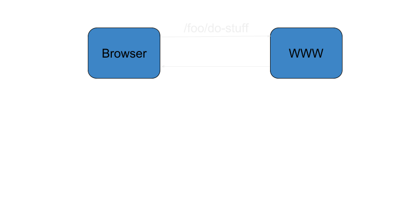
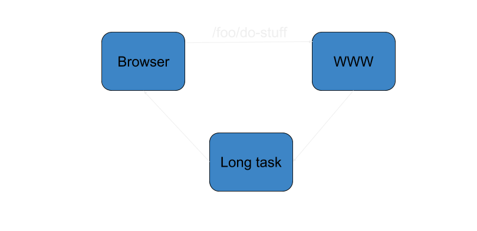
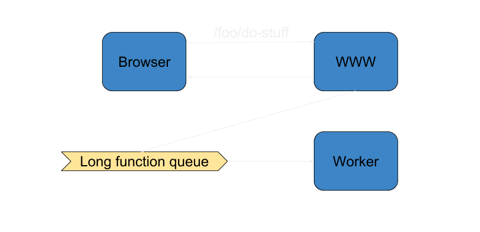
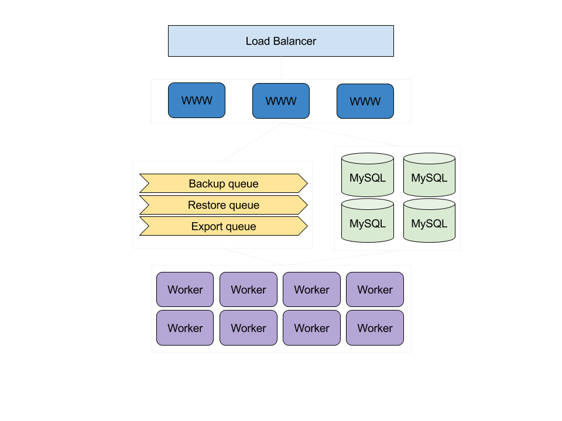
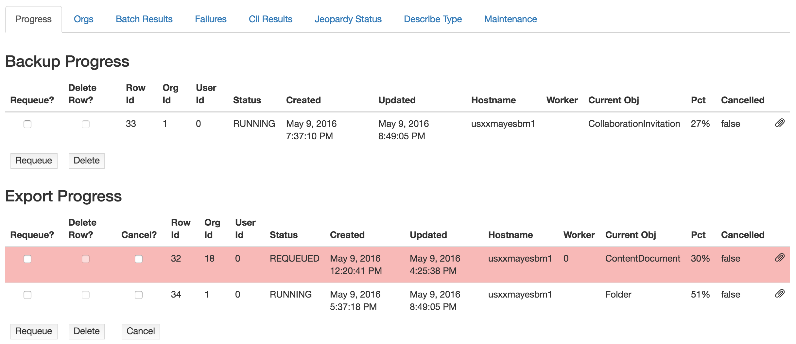
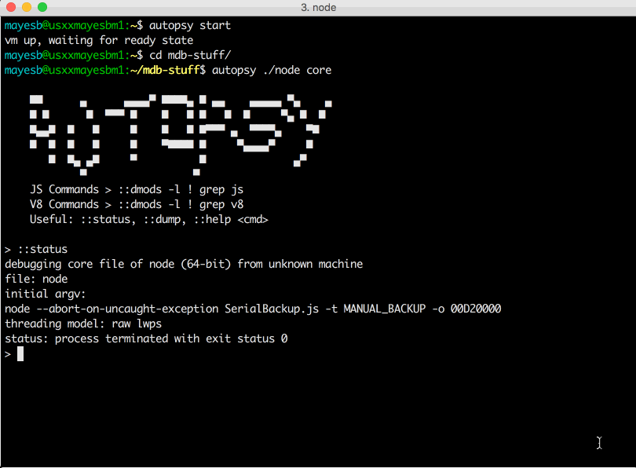

Long-running Background Processes in Node
Brandon Mayes
Node Summit 2017
- Going to move fast due to time limit
Spanning?
SaaS data protection == Backup and recovery for cloud applications
Apps we support
G-Suite
Salesforce Office 365
- User error, bad sync, or malicious deletion...but you actually do need to back these things up.
Some long tasks we perform
Backup
Restore
Cross-org "restore"
Metadata Comparison
Export
- These are for SF product.
What's this talk all about?
Architectural dilemmas
Challenges coming from a Java background
Building processes for the long haul
Lessons learned
Areas for improvement
When things were easy

Then something happened

Dealing with async response
Respond in a callback
Respond before callback
A...third thing
Respond in callback
expressApp.get('/foo/do-stuff', (req, res) => {
stuff();
longFunction((err, data) => {
res.send(data);
});
});
Not blocking everyone else but takes too long and isn't a good experience for user.
Respond before callback
expressApp.get('/foo/do-stuff', (req, res) => {
stuff();
longFunction((err, data) => {
// How do I notify the user of anything here?
});
// We're sending back a string instead of the actual data
res.send('done');
});
Not necessarily blocking, user isn't waiting, but they have no idea whether the long task fails or not.
Worker "thread" pattern

- Any sort of message bus (SQS, Redis, RabbitMQ, etc.)
Send long task to a worker
expressApp.get('/foo/do-stuff', (req, res) => {
stuff();
const uniqueId = queueLongFunction(req);
res.send(uniqueId);
});
Use this pattern when a function...
Blocks the event loop
Takes a really long time
Scalable architecture

- Each tier can scale out in a horizontal fashion independently of others
Tips for robust workers
Retry logic
Catch all unhandled exceptions/rejections
Resumability
Leave breadcrumbs
Make tasks resumable , not just restartable
- To end-user it appears to be running continously
Challenges coming from Java
Keep wanting to borrow patterns
No threads on the server!
Pace that libraries change is FAST
npm shrinkwrap to avoid constantly breaking builds
Carve out time to upgrade and test changes more often.
Node is async, but we need to maintain order
We use Bluebird (for now)
Wrote a utility for promise-returning while loops/retry logic
Try npm install bower and you'll be told to use yarn or webpack.
Monitoring all the things
Internal monitoring application
Slack integration coming from Nagios
Parse logs
CloudWatch
InfluxDB
Monitoring progress

- Obviously this is internal only and doesn't have to be pretty...just functional.
If all else fails use fire debug
Create a debug queue
Route to debug queue via internal tool
Higher logging level
Generate a core dump (for mdb)
node --abort-on-uncaught-exception
Setting up mdb
install VirtualBox
npm install -g autopsy
autopsy setup (if possible, increase RAM after this)
autopsy start
autopsy node core
autopsy stop
- Default RAM is 2GB, I used 4GB
MDB debugging
A brief introduction using animated gifs...
- Actual core file we had in production
Inspecting the call stack

What happened?
Making request to Salesforce Bulk API
Result is a CSV
Underlying library had an open github issue:
Using synchronous functions
Stored entire contents of CSV in memory
Solution: Wait for proper stream fix and upgrade lib
Workaround: Make smaller requests
- Bulk API is async. Make request, poll status, download
Other useful commands
::jsfunctions
::jsfindobjects
many more...
- jsfunctions and jsfindobjects can take a long time
So why Node and not Java?
Our workload is extremely I/O intensive
Easy concurrency management without threads
More rapid code changes
Easily debug without recompiling
- Not good for every use-case (especially high compute workloads with little I/O)
Lessons learned
Delegate long-running tasks to workers
Use message bus for interprocess communication
Fail gracefully (fault tolerance, resumability, etc.)
Carve out time to update and test often
Monitor, find ways to debug, and automatically recover
Be paranoid
The struggle is real
How to generate a thread/stack dump?
Can't always test with "live" data or large enough data
Standup DB snapshot for testing, explain plans, etc.
Log too much at first and/or save that for debug worker
- Can't send SIQUIT (kill -3) signal to get heap dump